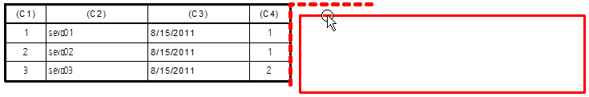

Separate and rejoin table pages
The first page of a multi-page table owns the subsequent pages of the table. You can drag any page of a multi-page table, and all pages of the table move with it.
Separate a page from a multi-page table
You can separate page two from page one, and page three from page two.
-
Press Alt and drag any table page except the first page.
Rejoin a page separated from a multi-page table
You can rejoin related table pages located on the same sheet by dragging them until they snap together. An alignment indicator assists with their positioning.
-
Begin dragging the separated table page to display the eligible alignment indicator.
Only the page that it is allowed to join is highlighted.

-
When the table page corner is nearly matched with the alignment indicator, release the mouse button.
The table page snaps into alignment.
-
The Anchor corner and Page gap options on the Location tab in the Table Properties dialog box affect how the table pages fit together.
-
The Intent Zone option on the Cursors tab in the IntelliSketch dialog box controls how close you have to be to the alignment indicator before the table snaps into alignment.
How do I
Align a table to a border or title blockEdit a table cell directly
Show and edit property text in a table cell
Change the font size of table cells with direct edit
Extract model information into a model table using property text
Sort table contents
Copy table contents to the clipboard
Add a table title
Manipulate table rows and columns
Learn more
Editing a table directlyTable cell color and value editing
Arranging table pages